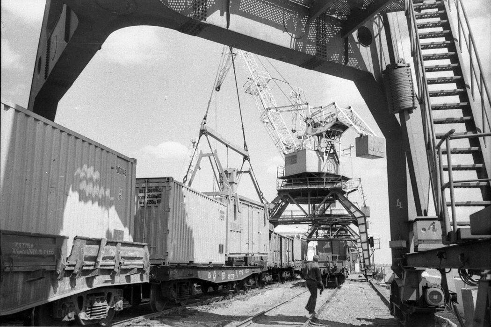

Портальный кран Ganz 5/6т

Облегченная модель портального крана Ganz использовалась для работы с грузами до 6 тонн. Не оснащалась грейфером — применялась только с крюковой подвеской. Основное назначение: снабжение углем речных пароходов и теплоходов (бункеровка), а также погрузка штучных грузов небольшого веса. Компактные размеры позволяли размещать кран в стесненных условиях причала, где полноразмерные Ganz 16/27,5т не помещались.
В советский период
До перехода речного флота на дизельное топливо через Стрелку проходили огромные объемы угля для пароходов Волжского бассейна. Малый кран Ganz обеспечивал бункеровку судов, обслуживал мелкие партии промышленных грузов и участвовал в ремонтных работах на причале. Несмотря на скромную грузоподъемность, этот кран был незаменим в повседневной работе порта.